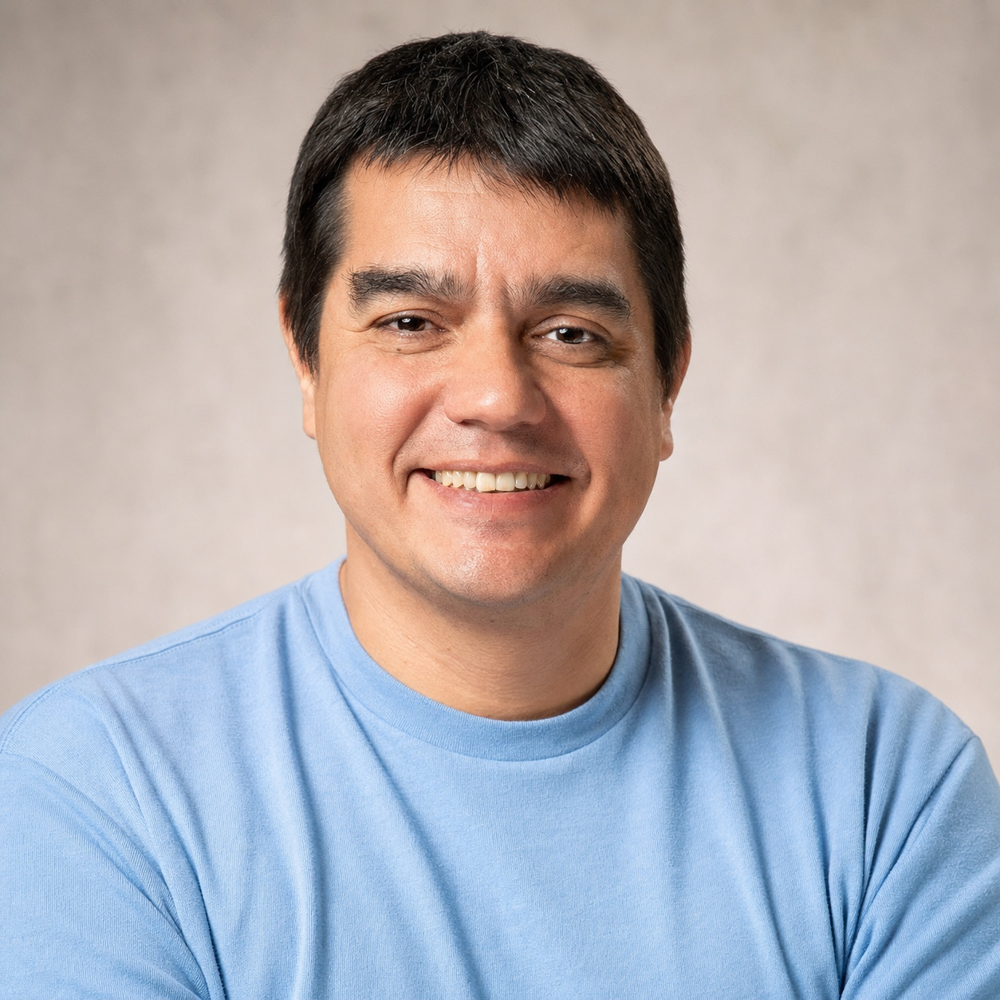

See change earlier
Recognize meaningful shifts across technology, companies, and the wider economy before they become obvious.
For nearly two decades, I have built AI systems that learn from experience. Today, I am applying that work to recognize overlooked potential, improve how capital is allocated, and support the companies building our future.

What I am building
Markets reflect an overwhelming stream of technological, economic, and human signals. Even sophisticated investors can process only a fraction of them.
We are building frontier AI that reasons across this complexity to understand how companies and industries could evolve.
The ambition goes beyond prediction. We want to uncover consequential risks and opportunities earlier, help capital reach promising ideas, and eventually make sophisticated financial intelligence accessible far beyond a small number of institutions.
The goal is not simply to invest in the future. It is to help create it.
Recognize meaningful shifts across technology, companies, and the wider economy before they become obvious.
Help capital reach the technologies and industries capable of producing lasting economic and social value.
Make powerful financial intelligence useful to many more people, not only the largest institutions.
Research foundation
AI should not need to be handed every answer. It should learn by observing, acting, questioning, and improving, much as people do.
Pioneered BYOL and related methods that helped AI learn useful representations without relying on human-provided labels.
Advanced PBL and World Discovery Models, systems that build an internal understanding of their environment through observation and interaction.
Contributed to foundational work including Noisy Networks, BYOL-Explore, Neural Belief Representations, and Minimax RL.
Worked on SRPO, enabling frontier models to revisit their first answer, challenge their reasoning, and improve through refinement.
Journey
Nearly two decades across reinforcement learning, self-supervised learning, world models, and frontier language models.
Building frontier AI for intelligent financial decision-making and long-term economic progress.
Advanced frontier language models and methods for iterative reasoning and self-improvement.
Led and contributed to influential work across self-supervised learning, exploration, and world models.
Published research spanning machine learning, control, and computational neuroscience.
Radboud University Nijmegen, following graduate study in control engineering and electrical engineering.